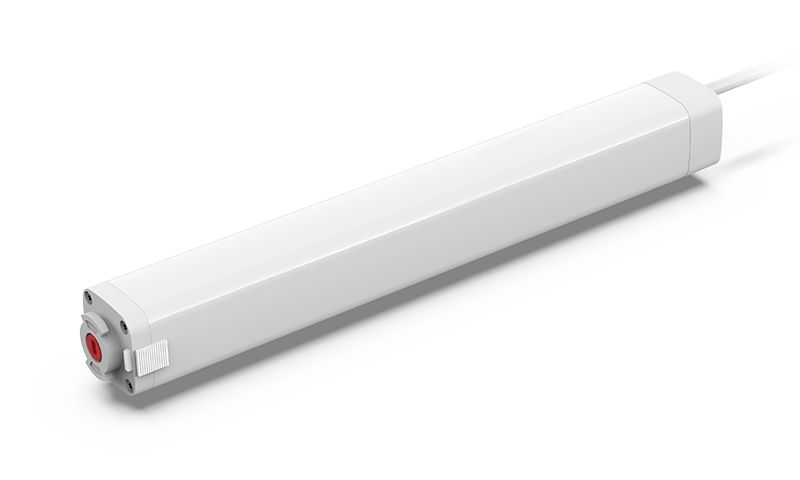
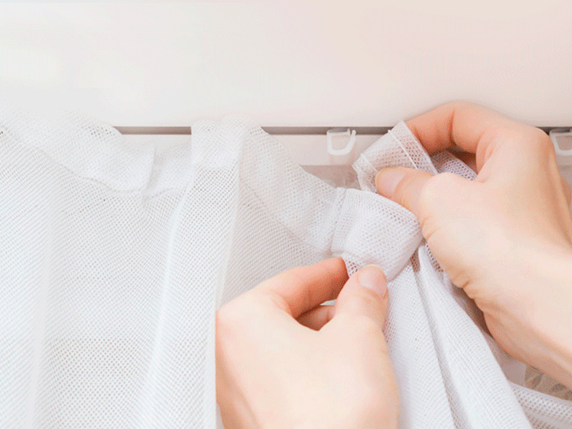
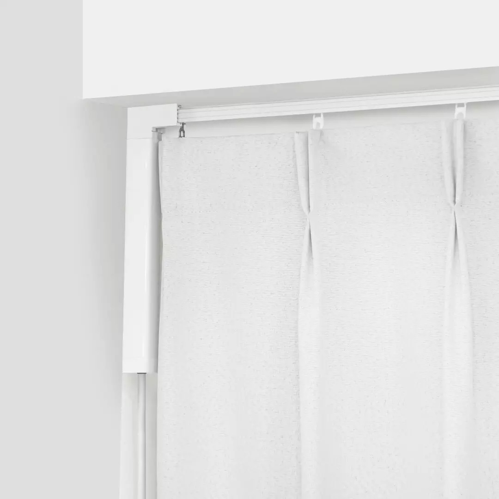
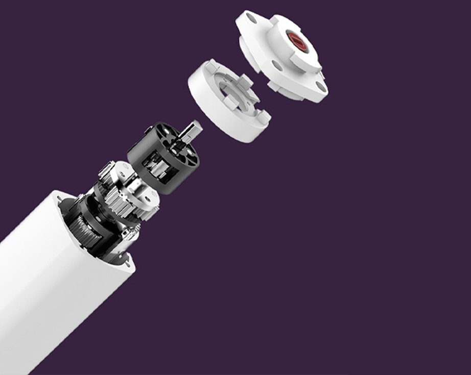
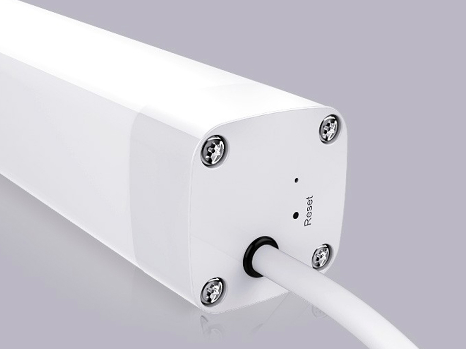
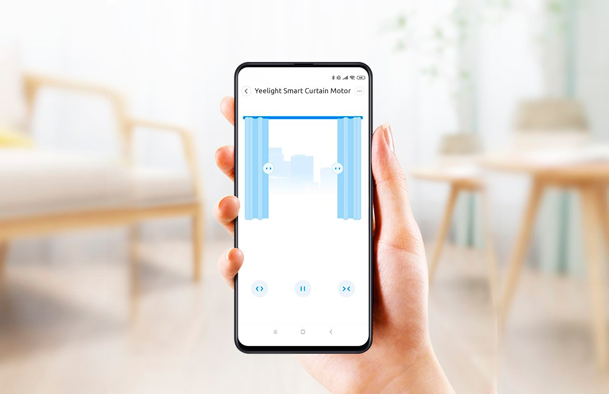

<div class="row mirror">
    <div class="col-xs-12 col-sm-12 col-md-10 col-md-offset-1 col-lg-8 col-lg-offset-2 content">

        <section class="row mirror_content_1">
            <div class="col-xs-12 col-sm-6 col-md-6 col-lg-6">
                <div class="text">
                    <h1>Yeelight Smart Electric Curtain Motor & Stitching Track</h1>
                    <h2>Умный карниз с&nbsp;электромотором и&nbsp;напрявляющими для штор</h2>
                    <p>Работа по расписанию | Управление смартфоном | WiFi, Bluetooth</p>
                </div>
            </div>
            <div class="col-xs-12 col-sm-6 col-md-6 col-lg-6">
                
            </div>
        </section>

        <section class="row mirror_content_2">
            <div class="col-xs-12 col-sm-12 col-md-6 col-md-push-6 col-lg-6 col-lg-push-6" style="padding: 0">
                <div class="text">
                    <h2>Универсальное решение проблем со шторами</h2>
                    <p>Во время открытия штор крючок заклинил на карнизе? Из мелкой щели неплотно закрытых штор свет
                        бьет прямо в лицо? Утром не хочется вылезать из-под одеяла для открытия штор? Уходя из дома,
                        забыли закрыть шторы, и теперь солнце будет нагревать комнату и портить мебель своим светом? C
                        помощью умного карниза Yeelight, это перестает быть проблемами!</p>
                </div>
            </div>
            <div class="col-xs-12 col-sm-12 col-md-6 col-md-pull-6 col-lg-6 col-lg-pull-6"
                style="padding: 0; font-size: 0;">
                </div>
        </section>

        <section class="row curtain_content_4">
            <div class="col-xs-12 col-sm-12 col-md-6 col-lg-6" style="padding: 0">
                <div class="text">
                    <h2>Слаженная работа с другими устройствами</h2>
                    <p>Умным карнизом Yeelight можно управлять не только через приложение или настенный выключатель
                        Yeelight, но и с помощью умных голосовых помощников, открывая для себя еще больше возможностей
                        домашней экосистемы.</p>
                    <p>Для того, чтобы почувствовать эффект погружения в атмосферу фильма, достаточно просто сказать
                        голосовому Ассистенту "Режим кино", все остальное умный дом сделает за Вас - выключится свет и
                        сами собой закроются шторы.</p>
                    <p>Собираетесь в душ? Сообщите об этом Алисе. В комнате закроются шторы, а в ванной комнате вас
                        будет ждать включенный обогреватель.</p>
                    <p>Если же вы устали и собираетесь спать - ложитесь! Закрыть шторы и включить свет в режиме ночника
                        можно голосом.</p>
                </div>
            </div>
            <div class="col-xs-12 col-sm-12 col-md-6 col-lg-6" style="padding: 0; font-size: 0;"></div>
        </section>

        <section class="row curtain_content_3">

            <div class="col-xs-12 col-sm-12 col-md-6 col-lg-6" style="padding: 0; font-size: 0;"></div>
            <div class="col-xs-12 col-sm-12 col-md-6 col-lg-6" style="padding: 0">
                <div class="text">
                    <h2>Бесшумная конструкция</h2>
                    <p>В конструкции электродвигателя и редуктора умного карниза Yeelight также были учтены детали
                        шумоподавления, чтобы уровень шума на расстоянии в 1 метр составлял всего 35 дБ, совершенно не
                        мешая спокойному отдыху или работе.</p>
                </div>
            </div>
        </section>

        <section class="row curtain_content_4">
            <div class="col-xs-12 col-sm-12 col-md-6 col-lg-6" style="padding: 0">
                <div class="text">
                    <h2>Надежный корпус</h2>
                    <p>Прочный корпус умного карниза Yeelight выполнен из качественного алюминиевого сплава, он
                        совершенно не подвержен коррозии и будет долгое время радовать первозданной чистотой.</p>
                </div>
            </div>
            <div class="col-xs-12 col-sm-12 col-md-6 col-lg-6" style="padding: 0; font-size: 0;"></div>
        </section>

        <section class="row curtain_content_5">
            <div class="col-xs-12 col-sm-12 col-md-12 col-lg-12 align-center" style="padding: 0;">
                <div class="text">
                    <h2>Удобное управление</h2>
                    <p>В жаркий день Вы ушли на работу и боитесь, что к вечеру солнце нагреет комнату до невыносимой
                        жары? Или не хотите, чтобы мебель стояла под прямым солнечным светом? Можно просто открыть
                        приложение MiHome и прямо из него управлять движением штор, даже находясь вдали от дома.</p>
                    <p>Умный карниз Yeelight можно подключить к умному беспроводному выключателю, чтобы с его помощью
                        управлять положением штор совершенно новым способом. Шторы по-прежнему можно открывать и
                        закрывать
                        руками, но теперь достаточно сдвинуть их в нужную сторону, а умный карниз автоматически
                        включится и сделает все остальное.</p>
                </div>
                
            </div>
        </section>

        <section class="row mirror_content_11">
            <div class="col-sm-12 col-md-12 col-lg-12" style="padding: 0">
                
                <table class="table">
                    <thead>
                        <tr>
                            <th colspan="2">Характеристики</th>
                        </tr>
                    </thead>
                    <tbody>
                        <tr>
                            <td>Модель</td>
                            <td>YLDJ001</td>
                        </tr>
                        <tr>
                            <td>Тип подключения</td>
                            <td>Wi-Fi 802.11 b/g/n, 2.4 ГГц, Bluetooth 4.2</td>
                        </tr>
                        <tr>
                            <td>Взаимодействие</td>
                            <td>Mi Home, Алиса, Google Assistant</td>
                        </tr>
                        <tr>
                            <td>Максимальная нагрузка</td>
                            <td>50 kg</td>
                        </tr>
                        <tr>
                            <td>Вес</td>
                            <td>Мотор: 825 г, карниз: 1660 г</td>
                        </tr>
                        <tr>
                            <td>Источник питания</td>
                            <td>100-240V~ 50/60Hz (без вилки)</td>
                        </tr>
                        <tr>
                            <td>Мощность</td>
                            <td>22 W</td>
                        </tr>
                        <tr>
                            <td>Дополнительная информация</td>
                            <td>максимальная составная длина карниза: 3,2 м; минимальная: 20 см; скорость вращения
                                мотора: 80 об/мин</td>
                        </tr>
                    </tbody>
                </table>
            </div>
        </section>
    </div>
</div>